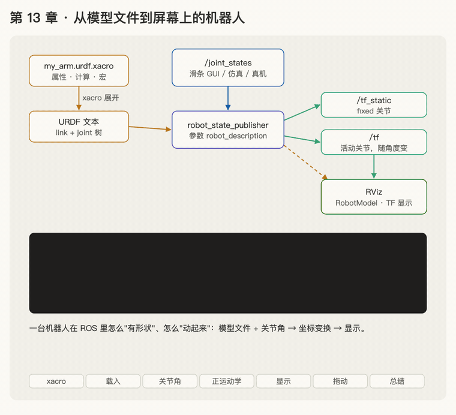
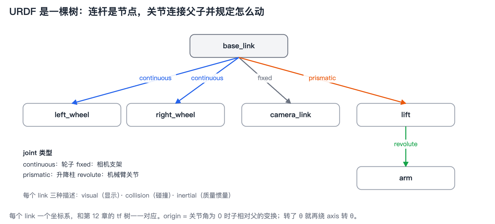
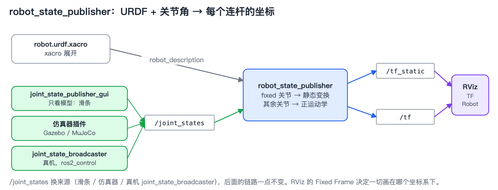

第 13 章 · URDF、xacro、robot_state_publisher 与 RViz
本地运行
git clone https://github.com/wikieden/ros2-from-scratch
cd ros2-from-scratch/code/notebooks
pip install jupyterlab torch numpy
jupyter lab ch13_urdf_fk.ipynb也可以下载后直接用 VS Code 打开 .ipynb 运行。需要 GPU 的章节在 Colab 里选「代码执行程序 → 更改运行时类型 → GPU」。
本章回答：机器人长什么样、关节怎么连、每段多重，用什么文件描述？关节转动后，连杆的坐标变换是谁算出来发到 tf 的？RViz 里怎么把机器人"画"出来？
讲解日期：2026-11-13 · 上一章：第 12 章 tf2 · 下一章：第 14 章 launch 进阶、测试与调试
对应原文：ros2_documentation/source/Capabilities/Simulation/URDF/下的教程（Building-a-Movable-Robot-Model-with-URDF.rst等）；ros2_documentation/source/Developer-Tools/Build/Using-Xacro-to-Clean-Up-a-URDF-File/（路径相对ros2/materials/）
对应 study-plan 阶段 D3、D4，动手里程碑 R-M6（自己写一个 2 连杆臂的 xacro，在 RViz 里拖动）。
本章缩写：URDF = Unified Robot Description Format（统一 / 机器人 / 描述 / 格式）；xacro = XML macro（XML / 宏）；RViz = ROS Visualization（ROS 可视化工具）；MJCF = MuJoCo XML Format（MuJoCo 仿真器的模型格式）；SRDF = Semantic Robot Description Format（语义 / 机器人 / 描述 / 格式：MoveIt 用，第 18 章）；GUI = Graphical User Interface（图形 / 用户 / 界面）；DoF = Degrees of Freedom（自由度）。全部缩写见 附录 · 缩写与术语表
本章先看总图，再分 3 步：
| 步 | 内容 | 状态 |
|---|---|---|
| 0 | 总图：xacro → URDF → robot_state_publisher + 关节角 → tf → RViz | ✅ |
| 1 | URDF：link、joint、四种关节、visual / collision / inertial | ✅ |
| 2 | xacro：属性、计算、宏 | ✅ |
| 3 | robot_state_publisher 与 RViz | ✅ |
讲解
总图 · 从模型文件到屏幕上的机器人

可交互版：animations/13-urdf-pipeline.html（内置浏览器：http://localhost:8340/13-urdf-pipeline.html）。
robot.urdf.xacro ──xacro──▶ URDF 文本 ──▶ robot_state_publisher ──▶ /tf、/tf_static ──▶ RViz
▲
/joint_states（关节角）───┘ 来自：滑条 GUI / 仿真器 / 真机驱动
第 1 步 · URDF：连杆和关节
依据：Capabilities/Simulation/URDF/ 下的教程（下称"URDF 教程"）。URDF 是一个 XML 文件，描述机器人的几何形状和结构（URDF-Main.rst）。
两个基本元素：
- link（连杆）：一个刚体部件，比如底座、上臂、夹爪。
- joint（关节）：连接一个父连杆和一个子连杆，规定子连杆相对父连杆能怎么动。
所有 link 和 joint 组成一棵树（和第 12 章的 tf 树一一对应：每个 link 一个坐标系）。
四种常用关节（URDF 教程 Building-a-Movable-Robot-Model-with-URDF.rst）：
| 类型 | 怎么动 | 限位 | 例子 |
|---|---|---|---|
fixed |
不动 | — | 相机固定在底座上 |
continuous |
绕轴无限转 | 无 | 轮子、R2D2 的头 |
revolute |
绕轴转，有上下限 | 弧度 | 机械臂关节、夹爪 |
prismatic |
沿轴平移，有上下限 | 米 | 升降柱、伸缩臂 |
（另有 planar、floating，较少用。）
一个关节怎么写（取自 URDF 教程的 R2D2 例子）：
<joint name="left_gripper_joint" type="revolute">
<parent link="gripper_pole"/>
<child link="left_gripper"/>
<origin rpy="0 0 0" xyz="0.2 0.01 0"/> <!-- 关节在父连杆坐标系里的位置和朝向 -->
<axis xyz="0 0 1"/> <!-- 绕 z 轴转 -->
<limit effort="1000.0" lower="0.0" upper="0.548" velocity="0.5"/> <!-- 力矩、角度范围、最大速度 -->
</joint>
origin 就是第 12 章的"子坐标系相对父坐标系的变换"（关节角为 0 时）。关节转了 θ 角，就在这个基础上再绕 axis 转 θ。
一个连杆的三种描述（Adding-Physical-and-Collision-Properties-to-a-URDF-Model.rst）：
| 标签 | 给谁用 | 要点 |
|---|---|---|
<visual> |
RViz 显示 | 可以用精细的网格模型（mesh） |
<collision> |
碰撞检测、运动规划 | 用简单形状（圆柱、盒子、球）：算得快；也可以故意画大一点，留出安全余量 |
<inertial> |
物理仿真、动力学控制 | mass（千克）+ 3×3 转动惯量 inertia；简单几何体的惯量可查表计算 |
Lyrical 的 URDF 新功能（Release-Lyrical-Luth.rst "URDF improvements"）：姿态可以直接写四元数、新增胶囊形状、关节可以写加速度 / 减速度 / 加加速度（jerk）限制。要在文件里声明 version="1.2" 才能用。
URDF 和 MJCF：MuJoCo 仿真器用自己的 MJCF 格式，能描述 URDF 写不了的东西（闭链、肌腱、接触参数）。学习型机器人项目常两种都有：URDF 给 ROS 工具链，MJCF 给训练仿真（机器人软硬件架构专题第 9 章）。

图 13-1 · URDF 是一棵树：连杆是节点，关节连父子，类型决定怎么动（continuous / fixed / prismatic / revolute）。
第 2 步 · xacro：让 URDF 不再重复
依据：Developer-Tools/Build/Using-Xacro-to-Clean-Up-a-URDF-File/（下称"xacro 教程"）。
URDF 很快会变得又长又重复：左右两个轮子、六个结构相同的关节……xacro 是 XML 的宏语言，跑一遍就展开成普通 URDF（xacro 教程开头）：
xacro model.urdf.xacro > model.urdf
三件法宝：
<robot name="arm" xmlns:xacro="http://www.ros.org/wiki/xacro">
<!-- 1. 属性：当常量用 -->
<xacro:property name="link_len" value="0.3"/>
<!-- 2. 计算：${} 里能写算式 -->
<origin xyz="0 0 ${link_len/2}"/>
<!-- 3. 宏：一段可复用、带参数的模板 -->
<xacro:macro name="arm_link" params="name length">
<link name="${name}">
<visual><geometry><cylinder length="${length}" radius="0.03"/></geometry></visual>
</link>
</xacro:macro>
<xacro:arm_link name="upper_arm" length="${link_len}"/>
<xacro:arm_link name="forearm" length="0.25"/>
</robot>
还能 <xacro:include filename="..."/> 拆成多个文件，用 <xacro:arg> 从 launch 传参（比如选不同型号的夹爪）。
第 3 步 · robot_state_publisher 与 RViz
依据：URDF 教程 "Specifying the Pose" 一节、Using-URDF-with-Robot-State-Publisher-py.rst、Developer-Tools/Visualization/RViz/RViz-User-Guide/（下称"RViz 指南"）。
robot_state_publisher 做什么：
- 读参数
robot_description（URDF 全文）； - 把
fixed关节算成静态变换，发到/tf_static； - 订阅
/joint_states（sensor_msgs/msg/JointState：每个关节的名字、角度 / 位置、速度、力矩），每收到一次，就用正运动学把每个活动关节对应的连杆变换算出来，发到/tf。
/joint_states 从哪来：
| 场景 | 发布者 |
|---|---|
| 只想看模型、手动拖 | joint_state_publisher_gui：读 URDF 找出所有非固定关节和限位，每个关节一个滑条（URDF 教程 "Specifying the Pose"） |
| 仿真 | 仿真器（Gazebo 等）的插件 |
| 真机 | ros2_control 的 joint_state_broadcaster（第 15–16 章） |
完整链路（URDF 教程原话的意思）：GUI 解析 URDF 找到非固定关节 → 用滑条值发布 JointState → robot_state_publisher 算出各部件之间的变换 → RViz 用这棵 tf 树把各部分形状画出来。
Lyrical 小变化：robot_state_publisher 可以设 use_robot_description_topic: true，改为订阅 robot_description 话题，而不是自己发布它，方便和自带机器人模型的框架对接（Release-Lyrical-Luth.rst 对应一节）。
RViz 基本用法（RViz 指南）：
- 左边是 Displays（显示项） 列表，点 Add 加显示项。常用：RobotModel（读
robot_description画机器人）、TF（画所有坐标轴）、Image、LaserScan、PointCloud2、Map、Marker（自己画箭头、方块等调试图形）。 - Global Options → Fixed Frame：RViz 把所有数据换到这个坐标系下显示。看机器人本体选
base_link，看导航选map或odom。Fixed Frame 填一个不存在的坐标系，所有显示项都会报错。 - 配置可以存成
.rviz文件，launch 时用-d加载。
一句话串起来（R-M6 的完整命令）：
ros2 launch urdf_tutorial display.launch.py model:=/path/to/my_arm.urdf.xacro
# 等价于：xacro 展开 → robot_state_publisher → joint_state_publisher_gui → rviz2

图 13-2 · robot_state_publisher：读 URDF、订阅 /joint_states，发 /tf_static 和 /tf，RViz 据此画出机器人。
和本仓库的连接：VLA 数据集里的"本体感知状态"（proprioception）就是 /joint_states；动作如果是末端位姿，从关节角算末端位置用的正是 URDF 描述的运动学链（机器人软硬件架构专题第 2 章）。
练习与作答记录
练习 13-1（第 1 步）：一个两轮差速小车，有底座、左轮、右轮、一个固定的激光雷达。写出所需的 link 和 joint 列表，每个 joint 标明类型。
- 作答：（待作答）
练习 13-2（第 1 步）：为什么 <collision> 通常用简单形状而不是和 <visual> 一样的精细网格？
- 作答：（待作答）
练习 13-3（第 3 步）：RViz 里机器人模型一片白、所有连杆叠在原点。你检查发现 /tf_static 正常，但 /tf 里没有连杆的变换。最可能缺了哪个节点？或者哪个话题没人发？
- 作答：（待作答）
口诀
- URDF：link 是骨头，joint 连父子；fixed 不动、continuous 无限转、revolute 有限转、prismatic 平移。
- 三件衣服：visual 给人看，collision 给碰撞（要简单），inertial 给物理（质量 + 惯量）。
- xacro：属性当常量，
${}做计算，宏去重复。 - 链路：URDF + 关节角 → robot_state_publisher → tf → RViz；Fixed Frame 要存在。
本章复习卡片编号
R32–R33，见 ../review.md。
附录 · 延伸阅读
留给以后深入学习用，不影响本章主线。★ 是建议先读的。
materials/指ros2/materials/；不带前缀的路径在materials/ros2_documentation/source/下（design/、ecosystem/开头的在materials/下）；...表示省略了和上一条相同的目录。
推荐阅读
| 读什么 | 读哪里 | 读它为了什么 |
|---|---|---|
★ URDF |
materials/ros2_documentation/source/Capabilities/Simulation/URDF/ |
从零搭视觉模型 → 可动模型 → 碰撞与惯量 → 配合 robot_state_publisher（Py / C++）→ 从 CAD 导出。 |
★ Using-Xacro-to-Clean-Up-a-URDF-File |
Developer-Tools/Build/Using-Xacro-to-Clean-Up-a-URDF-File/ |
xacro 属性、数学、宏、在 launch 里调用。 |
★ RViz-User-Guide |
Developer-Tools/Visualization/RViz/RViz-User-Guide/ |
显示项、视图、Fixed Frame、工具；Marker-* 系列：用代码画调试图形。 |
dummy-robot-demo.rst |
Capabilities/Simulation/dummy-robot/dummy-robot-demo.rst |
一个完整的假机器人 demo（URDF + 关节发布 + 激光）。 |
| URDF XML 规范 | https://wiki.ros.org/urdf/XML（URDF-Main 给出的链接）。 | — |
| 本仓库 | robot-system-architecture 第 2 章（运动学）、第 9 章（仿真与数据）。 | — |
数学原理
- 正运动学 = 沿关节链依次相乘每个关节的变换 \({}_{0}T_{n}=\prod_{i=1}^{n}{}_{i-1}T_{i}(\theta_i)\)；惯性张量；推荐 Lynch & Park《Modern Robotics》第 4 章（正运动学）、第 8 章（开链动力学）。
公式清单
| 公式 / 规则 |
|---|
| 正运动学 \({}_{0}T_{n}=\prod_{i=1}^{n}{}_{i-1}T_{i}(\theta_i)\)：一个关节一个变换，依次相乘 |
| 关节限位：revolute 用弧度，prismatic 用米 |
代码对照：把本章的数字用代码算一遍
纯 Python 模拟，不需要 ROS 2（原因见第 1 章这一节）。代码在仓库本地
ros2/solutions/chapter-code/ch13_urdf_fk.py，配套测试tests/test_ch11_15.py；同名 notebook 在notebooks/ch13_urdf_fk.ipynb（讲解和代码放在一起，一格一格跑）。Mac 上直接能跑：
bash cd ros2/solutions/chapter-code uv run python ch13_urdf_fk.py # 一步一步打印 uv run pytest tests/test_ch11_15.py
讲义 ↔ 代码：
| 讲义 | 规则 / 数字 | 写法 | 跑出来 |
|---|---|---|---|
| 第 2 步 xacro | 属性当常量，${} 能算 | expand_xacro(ARM_XACRO) |
elbow 的 origin 变成 0.3 0 0 |
| 第 1 步 link / joint | 每个 joint 连父、子 link | read_joints(urdf) |
shoulder、elbow 是 revolute，tool_mount 是 fixed |
| 第 3 步 robot_state_publisher | fixed → /tf_static，其余按 /joint_states → /tf | state_publisher(...) |
/tf_static: tool；/tf: upper_arm、forearm |
| 第 3 步 正运动学 | 从 tool 一路乘到 base_link | tool_position(joints, {...}) |
(0,0)→(0.55,0,0.1)；(90°,0)→(0,0.55,0.1) |
| 第 1 步 限位 | revolute 有上下限 | shoulder = 3.0 | 被截到 1.57 |
关键几行：
props = {name: float(value) for <xacro:property ...>} # 收集属性
re.sub(r"\$\{([^}]+)\}", lambda m: f"{eval(m.group(1), {}, props):g}", text) # ${link_len}
tf[j["child"]] = (j["parent"], Transform(j["xyz"], quat_from_yaw(angle))) # 关节角 → 变换
T = step * T # 从 tool 往上一路乘
代码里才看得到的 3 件事：
- 用了第 12 章的
Transform：from ch12_tf2 import Transform, quat_from_yaw, r3，正运动学就是第 12 章的变换相乘，一个关节一个变换。notebook 里这几个定义已经抄进来了。 - 这个 2 连杆臂的两段长 0.3、0.25 取自讲义 xacro 例子，底座高 0.1、限位等其余数字是编的；所有关节都绕 z 转（平面臂）。
- xacro 只展开了属性和
${}，宏（xacro:macro）和include没实现。
自己改一改（不影响练习答案）：
- 把
forearm_len改成 0.4，重新展开再算 tool 位置； - 试 shoulder = 0.5、elbow = −0.5，想一想为什么 tool 的朝向回到了 0。